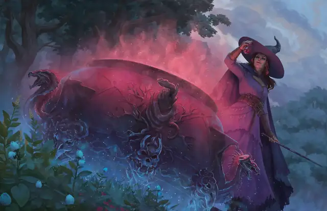

Бурлящий котёл Таши
Tasha’s Bubbling Cauldron
6 уровень, Призыв

Время сотворения Действие
Дистанция 5 футов
Компоненты В, С, М (позолоченный черпак стоимостью не менее 500 ЗМ)
Длительность 10 минут
Вы сотворяете стоящий на когтистых ножках котёл, полный бурлящей жидкости. Котёл появляется в незанятом пространстве на земле в пределах 5 футов от вас и существует, пока действует заклинание. Котёл не может быть перемещён и исчезает вместе со всей жидкостью внутри, когда заклинание заканчивается.
Жидкость в котле обладает свойствами зелья на ваш выбор, Обычной или Необычной редкости (например, Зелья лечения). Бонусным действием вы или ваш союзник можете потянуться к котлу и достать оттуда порцию этого зелья. Это зелье содержится во флаконе, исчезающем при выпивании зелья. Число порций зелья, которых можно достать из котла, равно вашему модификатору заклинательной характеристики (минимум одно зелье). Когда последнее из этого количества зелье достаётся из котла, котёл исчезает, и заклинание оканчивается.
Полученные из котла зелья, если они не выпиты, исчезают, когда вы сотворяете это заклинание снова.